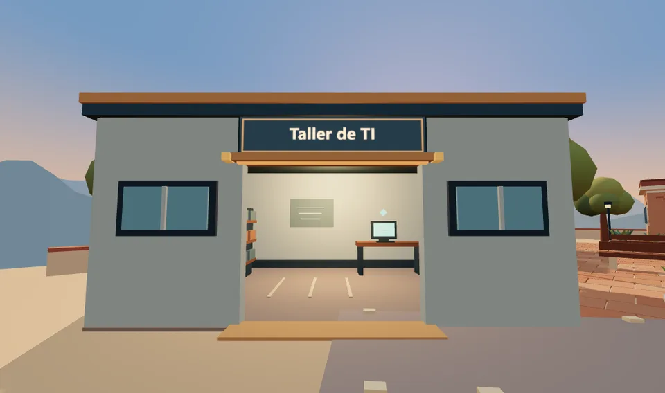
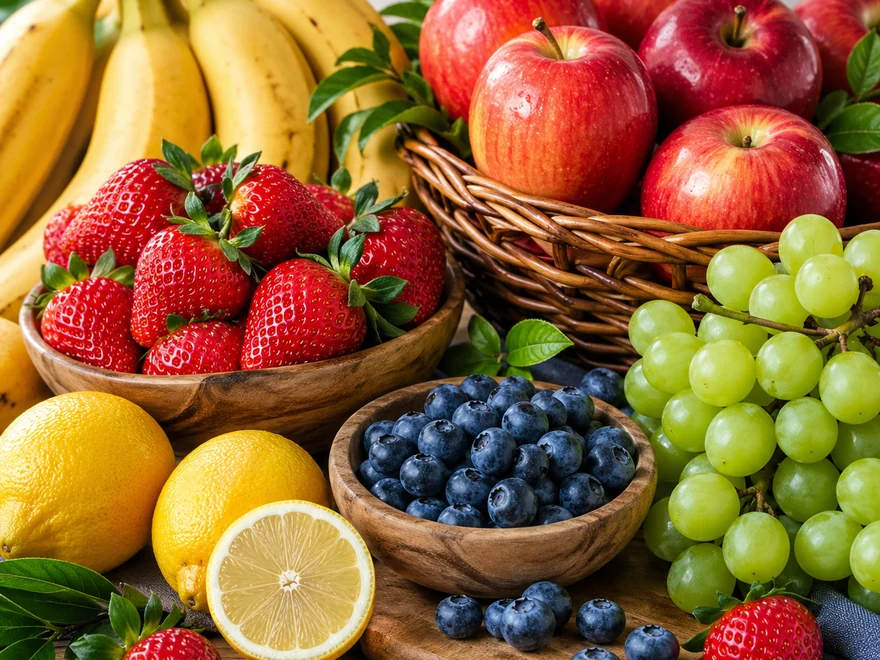

Simulación
- Ahorros
- $100
- Capital
- $60
Gestión asociativa
PORTAFOLIO · AMBATO, ECUADOR
Estudiante de Ingeniería en Software
Desarrollo aplicaciones web y experiencias interactivas para problemas de gestión y comunicación.
Diego recorre la plaza. Una vista aérea muestra el distrito y, frente al Laboratorio RGB, los prismas devuelven el color al mural.
No se pudo reproducir el tráiler.
CASO DESTACADO · AMBACAR
En mis prácticas trabajé en el módulo de AMBYSOFT para crear y editar usuarios y asignarles agencias, divisiones y roles. Diseñé pantallas y las conecté con los servicios del backend.

El formulario reúne los datos necesarios para crear el registro.
Los catálogos conectados al backend ofrecen las opciones que corresponden a cada campo.
El backend comprueba los datos antes de guardar el registro.
Flujo ilustrativo del módulo
¿Listo para la llamada?
Sí, ya me conecto.
¿Probamos la demo?
Equipo listo.
Verde norte–surVerde este–oesteRojo en ambas vías

Original ResultadoArrastra la línea o usa las flechas del teclado para comparar.
La comparación no pudo cargar.

Abierto a oportunidades remotas
Estudio Ingeniería en Software en la Universidad Técnica de Ambato. Me gusta conectar interfaces con APIs y bases de datos.
En Ambacar diseñé pantallas y desarrollé filtros y paginación para el módulo de usuarios de AMBYSOFT. En TalkApp trabajé con mensajería en tiempo real.
Me interesa la IA aplicada al análisis de datos y a la toma de decisiones. En Semáforo IA exploré cómo la lógica difusa y los algoritmos genéticos pueden adaptar un cruce al volumen de tráfico.
Me gustan los videojuegos como Valorant. Esa afición inspiró Distrito Cero, un barrio que puedes recorrer para descubrir lo que he construido.
Cisco Networking Academy
Análisis y visualización de datos con Python, Pandas y Matplotlib.
Cisco Networking Academy
Diagnóstico de redes, control de acceso y soporte a usuarios.
Cisco Networking Academy
Fundamentos del internet de las cosas y de los dispositivos conectados.
DISTRITO CERO